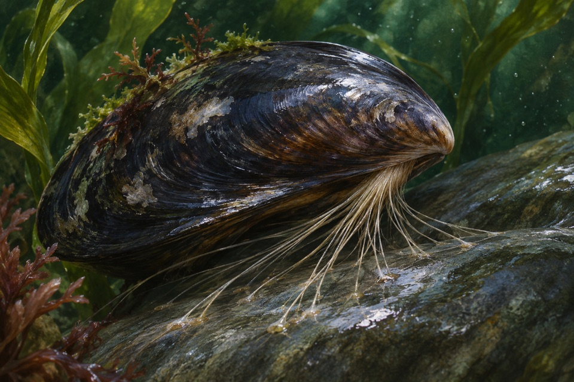
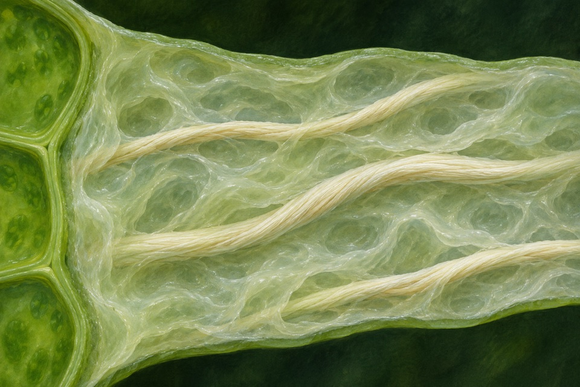

Module 01
Flood survival through growth quiescence
Limit elongation under temporary complete submergence and recover after drainage.
Evidence recordOpen any of the ten modules to see the reported observation, its sources, and the research questions still open.
Limit elongation under temporary complete submergence and recover after drainage.
Evidence record
Resolve oligomers generated from defined agarose.
Evidence record
Measure light output linked to bilirubin binding by UnaG.
Evidence record
Measure contact force and release as a function of loading direction.
Evidence record
Reduce shoot sodium accumulation and assess grain yield separately under saline soil conditions.
Evidence record
Generate the defined sugar-acid product from alginate oligomers.
Evidence record
Resolve stimulus-linked cytosolic calcium changes through photon emission.
Evidence record
Measure single-molecule binding to a wet surface.
Evidence record
Alter rooting depth through root growth angle and check yield under drought separately.
Evidence record
Detect unsaturated cleavage products from polygalacturonate.
Evidence record